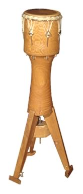
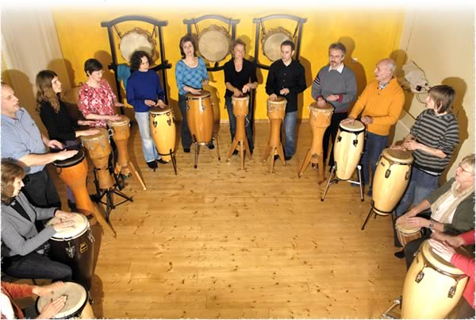

Unterricht
Conga & Afro-Drums
Das Erlernen und Spielen von Conga und Afro-Drums ist möglich in Form von Einzelstunden, in einem der wöchentlich stattfindenden Kursen, oder durch die Teilnahme an einem Schnuppertag.
Trommeln werden gestellt.
Diese zur Erde gerichtete Trommel (Conga, Dschembé, Kpanlogo, Dschonga) ist ein ideales Einstiegs- Instrument, mit dem auch „musikalische Laien“ jeglichen Alters rhythmische Spielfreude entdecken können.
Im Unterricht geht es zunächst darum, der Trommel die richtigen Sounds zu entlocken (Technik) und in einen Spielfluss zu kommen (Rechts-Linkskoordination). Schritt für Schritt erspielen wir uns afrikanische und lateinamerikanische Rhythmen, die wir anschließend in mehrstimmiger Besetzung zusammenfügen. Das Ganze würzen wir mit Percussion-Begleitung (Glocken, Rasseln, Surdo, Claves u.a.).
Mit zunehmender Spielfertigkeit der Gruppe erweitern wir das Repertoire mit lässigen Grooves (Funk- und andere tanzbare Rhythmen), sowie mit ungewöhnlicheren Rhythmusarrangements in größeren Zyklen (5er, 7er, 12er).
Prinzipien aus der TaKeTiNa Arbeit fließen in den Unterricht ein: Durch das Einbeziehen von Basisschritten und der rhythmischen Singstimme während verschiedener Trommel-Settings verinnerlichst du wichtige Rhythmusbausteine und wirst allmählich flexibler im Spiel. So wird der Grundstein gelegt für Improvisation und ein freies Spiel.
Schnuppertage
Für alle, die mit Spielfreude und ohne Leistungsdruck das Trommeln auf Congas und Afro-Drums erlernen möchten. Über die Basis des Körpers bekommst du leicht Zugang zum eigenen Rhythmusgefühl. Das Erlernen verschiedener Anschlagtechniken eröffnet dir die Klangvielfalt deiner Trommel. Übungen zur Rechts-Links-Unabhängigkeit lassen Dich flexibler werden im Spielfluß.Im gemeinsamen Spiel neu erlernter Rhythmen kannst Du die Lebendigkeit der Polyrhythmik spüren und auftanken.
„Je tiefer ich in die Welt von Rhythmus eindringe, umso reicher und faszinierender wird mein Erleben. Ein gutes Musikstück ist wie ein mehrdimensionaler Raum, den ich von verschiedenen Standpunkten aus betreten kann. Je nachdem, wo ich stehe, wie ich höre und wahrnehme, erscheint mir ein und dasselbe Stück immer wieder als eine neue Welt.“
Ranvita Hahn
